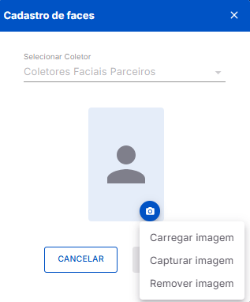

Página de Cadastro de Colaborador
Aplicação
A tela de cadastro é acessada ao clicar no botão + Novo Colaborador na página de consulta de colaboradores. O formulário de cadastro é dividido nas seguintes seções expansíveis, constituídas por diversos parâmetros de configuração.
Geral
Contém os dados principais do colaborador, utilizados principalmente para identificação:
- Crachá: Código de identificação do colaborador no sistema. (Obrigatório)
- CPF: Número do documento de CPF. (Obrigatório)
- PIS: Número de documento do PIS.
- Nome: Nome completo do colaborador. (Obrigatório)
- Unidade de Negócio: Unidade à qual o colaborador está vinculado. (Obrigatório)
- Cartão de Proximidade: Código do cartão de proximidade usado pelo colaborador no equipamento de ponto.
- Identificador na Folha: Código de referência para integração com sistemas de folha de pagamento.
- Data de Admissão: Data de entrada do colaborador na empresa. (Obrigatório)
- Data de Demissão: Data de saída do funcionário da empresa.
- Cargo: Cargo atual do colaborador.
- + ➡ Botão para criação rápida de cargos. Após criado, o cargo á vinculado automaticamente ao colaborador.
- Departamento: Departamento vinculado ao funcionário.
- + ➡ Botão para criação rápida de departamentos. Após criado, o departamento é vinculado automaticamente ao colaborador.
- Setor: Setor onde o funcionário está lotado.
- + ➡ Botão para criação rápida de setores. Após criado, o setor é vinculado automaticamente ao colaborador.
- Centro de Custo: Centro de Custo vinculado ao colaborador.
- + ➡ Botão para criação rápida de centros de custo. Após criado, o centro de custo é vinculado automaticamente ao colaborador.
Coletores Vinculados
Permite associar os equipamentos cadastros no sistema ao colaborador, autorizando a marcação de ponto no dispositivo:
- Campo de Pesquisa: Busca os registros na tabela com base no texto inserido no campo. Filtra apenas o conteúdo das colunas (Nome e Descrição).
- Botão Limpar Todos: Desvincula o colaborador de todos os coletores.
- Botão Vincular Todos: Vincula todos os coletores das lista ao colaborador.
- Tabela de Coletores Vinculados: Exibe, através de 3 colunas, as informações básicas sobre cada coletor registrado no sistema:

{kind=link}
{kind=link}
{kind=link}
Informações
A lista só exibe coletores que estejam Ativos no sistema, ou seja, no estado de Em Operação. Logo, equipamentos que foram Inativados na tela de cadastro de coletores não serão exibidos.
Configurações Móveis
Define os parâmetros e configurações de Acesso e Marcação via Dispositivos Móveis e Web
{kind=link}
- Seção Identificação para Acesso ao App e Demais Serviços Móveis: Define as crendenciais que o colaborador utilizará para acessar os serviços móveis da Inspell (Multiponto, iPonto Mobile, etc.):
- E-mail: Endereço de e-mail do colaborador, nos formatos (nome@provedor.com, nome@provedor.com.br, nome@provedor.net, etc.).
- Senha: Credencial segura para acessar os serviços.
- Seção iPonto Mobile: Define como o colaborador realizará a marcação de ponto, através das seguintes opções:
- Escolha o modo de operação no app: Define as permissões que o colaborador terá dentro do Aplicativo Mobile:
- Nenhuma Permissão Atribuída: O colaborador não poderá realizar nenhuma marcação de ponto (online / offline), e nem acessar e / ou baixar os demonstrativos de ponto.
- Apenas acesso e download do demonstrativo: O colaborador não pode realizar marcações, online ou offine, mas pode acessar e / ou baixar os demonstrativos de ponto.
- Demonstrativos + registrar o ponto online: O funcionário pode realizar apenas marcações online, e também acessar e / ou baixar os demonstrativos de ponto.
- Demonstrativo + registrar o ponto online / offline: Acesso total, ou seja, o funcionário pode realizar tanto marcações online, quanto marcações offline, além de acessar e / ou baixar os demonstrativos de ponto
- Fixar fuso horário para referência de marcação: Atribui um fuso horário fixo para as marcações feitas nos Aplicativos Móveis. Útil quando o fuso horário do local onde o colaborador está lotado difere do utilizado pelo APP.
- Habilitar registro de ocorrências: Permite, quando habilitado, que o colaborador faça o lançamento de ocorrências no APP iPonto Mobile. As ocorrências são eventos relevantes que não se caracterizam como registros de ponto.¹
Atenção
1 - Para que o registro de ocorrências seja corretamente habilitado, é preciso habilitar a opção global nas configurações gerais do sistema, através do caminho: menu Gerais ➡ opção Configurações ➡ aba iPonto Mobile ➡ seção Controle de Ocorrências.
- Escolha o modo de operação no app: Define as permissões que o colaborador terá dentro do Aplicativo Mobile:
Identificação Biométrica
Gerencia os dados biométricos do colaborador para uso nos equipamentos de marcação de ponto:
{kind=link}
-
Seção Gerenciar Faces: Permite cadastrar as fotos do colaborador que serão utilizadas no Multiponto, iPonto Mobile e Coletores Faciais Parceiros para realizar as marcações de ponto. É composta de uma pequena tabela, com as seguintes colunas:
- Faces: Exibe as faces cadastradas para o colaborador no sistema, e que serão utilizadas para a identificação biométrica. Caso não hajam faces, será exibida uma imagem padrão do sistema.
- Tipo de Imagem: Indica onde que a face cadastrada será utilizada (Multiponto, iPonto Mobile ou Coletores Faciais Parceiros).
- Ações: Disponibiliza uma ou mais ações que podem ser realizadas pelo usuário no gerenciamento das faces:
- ➕ Exibido somente quando não há nenhuma face cadastrada na seção. Ao clicar, abre o modal de cadastro de faces, permitindo adicionar novas fotos.
- 🖋 Exibido somente quando há, pelo menos, uma face cadastrada na seção. Ao clicar, abre o modal de cadastro de faces, permitindo editar as fotos já cadastradas.
- 🗑 Exibido somente quando há, pelo menos, uma face cadastrada na seção. Ao clicar, abre um modal de confirmação de exclusão, permitindo excluir todas as fotos cadastradas na seção.
- Modal de Cadastro de Faces: Permite acessar as opções para cadastro das fotos de identificação do colaborador:
- ➡ Abre um pequeno menu com três opções para o gerenciamento de faces:
- Carregar Imagem: Permite fazer o upload de uma imagem diretamente do computador.
- Capturar Imagem: Permite capturar a imagem em tempo real, através de algum dispositivo externo, como uma webcam, por exemplo.
- Remover Imagem: Exclui a imagem já cadastrada.

Modal de Cadastro de Faces - Coletores Parceiros 
Modal de Cadastro de Faces - MultiPonto e iPonto Mobile
- ➡ Abre um pequeno menu com três opções para o gerenciamento de faces:
Atenção
Caso a imagem da webcam não seja exibida na página de captura, certifique-se de que o dispositivo está ligado e corretamente conectado ao computador. Verifique também se o navegador de internet utilizado para acessar o iPonto Web está com permissão para acessar a câmera.
Informação
O sistema só permite carregar imagens com o formato PNG ou JPG, e que não excedam o tamanho máximo de 2MB.
{kind=link}
{kind=link}
Afastamento
Permite registrar e gerenciar períodos de afastamento do colaborador.
{kind=link}
-
Tabela de Afastamentos: Exibe, através de 6 colunas, todos os afastamentos cadastrados para o colaborador, estejam eles vigentes ou não:
- Data Inicial: Exibe a data exata, no formato DD/MM/AAAA, em que o respectivo afastamento do colaborador iniciou(ará).
- Data Final: Indica a data exata, no formato DD/MM/AAAA, em que o respectivo afastamento do colaborador finalizou(ará).
- Dias Afastados: Exibe a quantidade total de dias que o colaborador permaneceu afastado.
- Motivo: É a justificativa para o afastamento do colaborador.
- Data de Cadastro: Indica Indica a data exata, no formato DD/MM/AAAA, em que o respectivo afastamento do colaborador foi cadastrado no sistema.
- Ações: Contém um grupo de opções que permitem gerenciar o cadastro do afastamento:
- 🖋 Abre o modal de edição do afastamento.
- 🗑 Abre o modal de confirmação de exclusão do afastamento.
-
Botão Criar ➡ Abre a tela de cadastro de um novo afastamento, permitindo editar suas informações e adicioná-lo ao sistema:
{kind=link}
- Data Inicial: Indica a data exata, no formato DD/MM/AAAA, em que o respectivo afastamento do colaborador iniciou(ará).
- Data Final: Indica a data exata, no formato DD/MM/AAAA, em que o respectivo afastamento do colaborador finalizou(ará).
- Motivos: Lista com diversas justificativas que podem ser vinculadas ao afastamento.
Restrição Geográfica
Define as Restrições de Localização para o registro de ponto do colaborador.
{kind=link}
- Tabela de Restrições Geográficas: Exibe, através de 5 colunas, todos os restrições cadastradas para o colaborador:
- Descrição: Descrição que identifica a restrição geográfica.
- Endereço: Endereço exato do local que será delimitado pela restrição geográfica.
- Raio: Indica qual o tamanho, em metros, da área ao entorno do endereço cadastrado que será delimitada para a marcação de ponto.
- Colaboradores: Indica quantos colaboradores estão atualmente vinculados com essa restrição geográfica.
- Ações: Exibe um grupo de ações que são utilizadas para gerenciar cada cadastro:
- 🖊 ➡ Abre a tela de edição da restrição geográfica, permitindo alterar informações cadastrais e dados que afetam a sua operação.
- 🗑 ➡ Exclui permanentemente a restrição do sistema, desvinculando-a do cadastro do respectivo colaborador.
- 👁 ➡ Abre o cadastro da restrição geográfica em modo de visualização, ou seja, não permite alterar as informações, apenas vê-las.
- Botão CRIAR NOVA RESTRIÇÃO ➡ Abre a seguinte tela de cadastro de uma nova restrição geográfica, permitindo incluir suas informações e adicioná-la ao sistema:
- Descrição: Descrição que identifica a restrição geográfica.
- Endereço: Endereço exato do local que será delimitado pela restrição geográfica.
- Delimitar área de restrição: Indica qual o tamanho, em metros, da área ao entorno do endereço cadastrado que será delimitada para a marcação de ponto.
{kind=link}